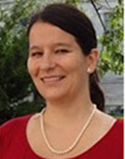

23rd Annual CCB Workshop
Online, May 23 - 25, 2022
The CCB Workshops provides hands-on help to cell biologists and biophysicists as they develop models of their own systems using Virtual Cell, COPASI or SpringSaLaD software.
Aurélie Carlier, Maastricht University |
Padmini Rangamani, UC San Diego |
 Melanie Stefan, University of Edinburgh |
Click here for more details about this free workshop and learn how to reagister.
A separate in-person workshop is planned for July 25-27, 2022 in Farmington, CT, USA; watch for more details.